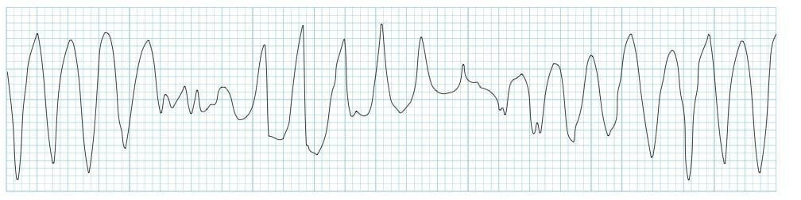
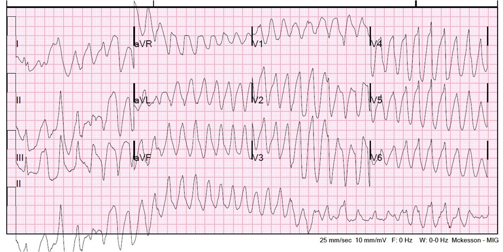
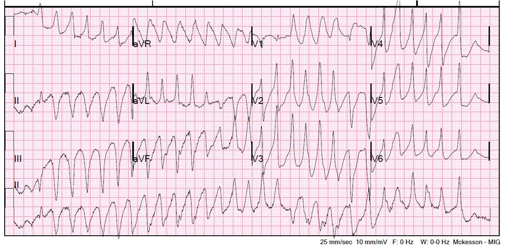
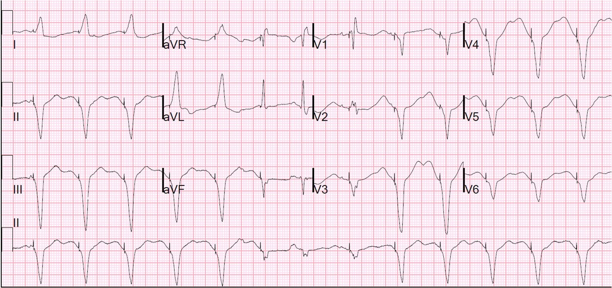
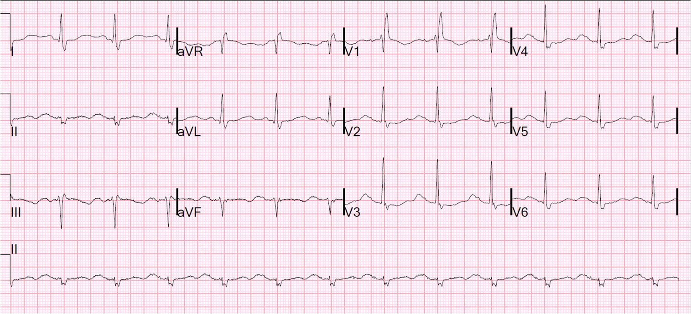
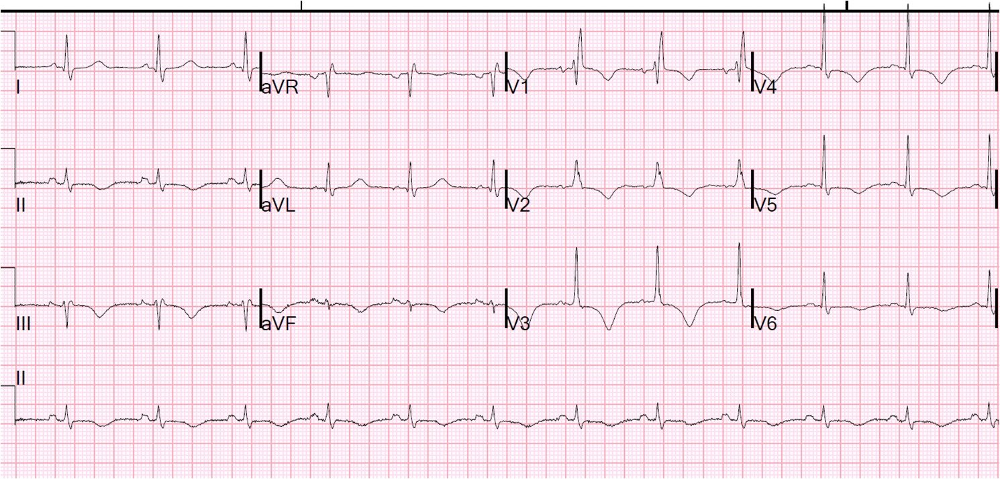

12/10/2013 — Nhịp nhanh thất đa dạng (polymorphic VT)
Bản dịch tiếng Việt của bài "Polymorphic Ventricular Tachycardia" – Dr. Smith’s ECG Blog. Giữ nguyên toàn bộ 7 hình ảnh của bản gốc.
Một phụ nữ ở độ tuổi 40 đến khám vì nhiều “cơn” trong tuần qua, với tần suất ngày càng tăng. Bà cảm thấy choáng váng, sau đó trở nên không đáp ứng. Mỗi cơn thường kéo dài khoảng một phút rồi tự hết. Bà không đau ngực. Bà có tiền sử co giật lúc nhỏ nhưng không có biểu hiện co giật nào trong các cơn này.
Monitor theo dõi cho thấy:


Trong lúc có nhịp này, bà tỉnh táo, tự bảo vệ được đường thở, da xanh tái, vã mồ hôi và đầu chi lạnh. Còn bắt được mạch. Không có suy hô hấp.
Một điện tâm đồ 12 chuyển đạo được ghi lại:


Trên monitor, bà tự chuyển sang một nhịp khác, và một điện tâm đồ 12 chuyển đạo khác được ghi lại:

Bà lại vào cơn nhịp nhanh:


Cần làm gì?
Trước tiên, đây là loại VT nào? VT đa dạng. Nhịp nhanh thất đa dạng (PMVT) được định nghĩa là một nhịp thất phức bộ rộng với tần số trên 100, có trục và/hoặc hình thái QRS thay đổi nhanh.
VT đa dạng
Nguyên nhân
VT đa dạng hoặc là xoắn đỉnh (torsades de pointe) (kèm QT dài trên điện tâm đồ 12 chuyển đạo nền) hoặc không phải xoắn đỉnh (thường kèm thiếu máu cục bộ hoặc bệnh tim thực thể khác). QT kéo dài trên điện tâm đồ 12 chuyển đạo nền không phải lúc nào cũng rõ ràng. Torsade de pointes có nghĩa là “xoắn quanh các đỉnh” và chỉ hiện tượng trục thay đổi quanh một đường đẳng điện.
Chỉ riêng hình thái của PMVT (tức là có hiện tượng xoắn quanh các đỉnh) không thể phân biệt PMVT do QT dài (xoắn đỉnh) với PMVT do các nguyên nhân khác (không phải xoắn đỉnh). Gần như không thể phân biệt PMVT mất mạch với rung thất, và các nghiên cứu đã cho thấy phần lớn các nhịp mất mạch trông giống xoắn đỉnh (với hình ảnh “xoắn quanh các đỉnh”) thực ra là rung thất. Sự phân biệt này không ảnh hưởng đến xử trí tức thời (khử rung) nhưng lại có ý nghĩa quan trọng trong việc phòng ngừa các rối loạn nhịp tiếp theo.
Các nguyên nhân xoắn đỉnh của PMVT
1. Mắc phải: thường do thuốc. Danh sách rất dài. Cũng có thể do rối loạn điện giải, đặc biệt là hạ kali máu (hypoK) và hạ magie máu (hypoMg). Khoảng QT hiệu chỉnh (hiệu chỉnh theo Bazett = QT chia cho căn bậc hai của khoảng R-R đứng trước tính bằng mili giây) thường lớn hơn 600 ms. Xoắn đỉnh trong QT dài mắc phải dễ xảy ra hơn nhiều khi nhịp chậm vì khoảng QT sau một khoảng ngưng dài còn dài hơn nữa. Do đó, xoắn đỉnh trong QT dài mắc phải được gọi là
“phụ thuộc khoảng ngưng” (pause-dependent): nếu có một nhát xoang sau một
khoảng ngưng dài (tạo ra khoảng QT dài hơn), thì một PVC sớm
(“hậu khử cực sớm,” EAD) dễ xảy ra hơn nhiều trong pha
tái cực và khởi phát xoắn đỉnh. Trình tự thường gặp là: nhát
xoang, rồi một PVC sớm, rồi một khoảng ngưng dài vì PVC đến sớm, điều này
dẫn đến một khoảng QT đặc biệt dài, rồi một PVC khác với hiện tượng “R trên T”
khởi phát xoắn đỉnh.
2. Bẩm sinh, đặc biệt là hội chứng QT dài bẩm sinh. PMVT không ổn định do QT dài bẩm sinh hiếm gặp hơn nhiều. (Trong 26 năm làm cấp cứu và 125.000 bệnh nhân, tôi chưa từng gặp một ca PMVT xoắn đỉnh nào do QT dài bẩm sinh). Các nguyên nhân bẩm sinh của xoắn đỉnh bao gồm “PMVT do catecholamine,” trong đó không thấy QT kéo dài trên điện tâm đồ 12 chuyển đạo, nhưng được cho là có cơ chế bệnh sinh tương tự. Điều trị dự phòng QT dài bẩm sinh bao gồm dùng thuốc chẹn beta (tương tự với PMVT do catecholamine, vì trong cả hai tình trạng này, kích thích beta gây khởi phát xoắn đỉnh); điều này khác với QT dài mắc phải, có thể được điều trị bằng kích thích beta (isoproterenol).
Tôi chưa tìm thấy khuyến cáo nào về việc dùng thuốc chẹn beta để xử trí cấp xoắn đỉnh ở nhóm này, nhưng gần như không thể biết isoproterenol sẽ làm tình trạng xấu đi hay tốt lên ở một bệnh nhân QT dài bẩm sinh cụ thể (xem bình luận của bác sĩ điện sinh lý của chúng tôi ở cuối bài). Có vẻ như phần lớn bệnh nhân QT dài bẩm sinh có triệu chứng đến khám sau ngất, hoặc sau rung thất đã được hồi sinh, và hiếm khi đến khám khi đang có xoắn đỉnh kéo dài hoặc tình trạng không ổn định. Do đó, xử trí những bệnh nhân này chủ yếu là nhận diện và phòng ngừa ngất và đột tử do tim trong tương lai, thường bằng máy khử rung cấy được kèm thuốc chẹn beta. Xoắn đỉnh do QT dài bẩm sinh có thể bị khởi phát khi dùng các thuốc kéo dài QT.
Các nguyên nhân không phải xoắn đỉnh của PMVT
Thường gặp nhất là do thiếu máu cục bộ. Đây hầu như luôn là những đợt thiếu máu cục bộ rõ ràng, nặng, kèm đau ngực và/hoặc bất thường thiếu máu cục bộ rõ rệt trên điện tâm đồ. Cũng có thể do bệnh cơ tim có từ trước.
Xử trí VT đa dạng
Phần lớn
xoắn đỉnh tự giới hạn. Nếu không tự chuyển nhịp, thì
cần khử rung nếu bệnh nhân không ổn định. Nếu đã chuyển nhịp, thì nhiều khả năng sẽ tái phát, và
điều trị nhằm phòng ngừa tái phát.
Điều trị cơn xoắn đỉnh cấp:
1. Sốc điện chuyển nhịp hoặc khử rung nếu đang có cơn, đặc biệt nếu không ổn định
2. Loại bỏ tác nhân gây bệnh trong QT dài mắc phải
3. Điều chỉnh
hạ kali máu, thậm chí lên mức hơi trên bình thường
4. Dùng 2-4g MgSO4 ngay cả khi nồng độ Mg bình thường (truyền duy trì 3-10 mg mỗi phút có thể có ích)
5. Chỉ khi là QT dài mắc phải: kích thích beta-adrenergic
bằng isoproterenol
6. Nếu các biện pháp này không hiệu quả thì tạo nhịp vượt tần số (overdrive pacing), thường ở tần số khoảng 100 để ngăn mọi khoảng ngưng, hầu như luôn có hiệu quả
(tạo nhịp qua da là ổn để tạm thời giải quyết, làm cầu nối tới tạo nhịp qua tĩnh mạch).
7. Lidocaine
cũng có thể có ích vì nó có thể ức chế các PVC (hậu khử cực sớm) vốn khởi phát xoắn đỉnh nếu chúng xảy ra trên sóng T.
8. Amiodarone có lợi ích đáng ngờ, và có thể gây hại. Bản thân thuốc làm kéo dài khoảng QT, dù không làm tăng nhiều nguy cơ xoắn đỉnh
9. Không dùng thuốc chẹn beta trừ khi bệnh nhân đã có chẩn đoán QT dài bẩm sinh. Hoàn toàn ngược lại: isoproterenol.
10.
Nếu là bẩm sinh [QT dài bẩm sinh, hoặc PMVT do catecholamine (vốn
có khoảng QT bình thường)], thì có thể có chỉ định chẹn beta cấp. Tôi sẽ
thử esmolol trước, vì có thể ngừng thuốc ngay. Tuy nhiên, thuốc không có tác dụng
chẹn beta-2 và tôi chưa rõ điều này có quan trọng và/hoặc cần thiết hay không.
Nếu esmolol không hiệu quả thì
nên dùng propranolol tĩnh mạch. Propranolol và Nadolol là các thuốc chẹn beta dài hạn tốt nhất cho QT dài bẩm sinh, còn metoprolol chọn lọc beta 1 thì không hiệu quả lắm. Điều này có phải do tính chọn lọc beta hay không thì tôi chưa rõ.
Đây là một ca QT dài bẩm sinh kèm xoắn đỉnh rất thú vị. Trong đó có phần bàn luận rất hay về vai trò và cơ chế tác dụng của chẹn beta trong QT dài bẩm sinh.
Điều trị cơn PMVT cấp không phải xoắn đỉnh: tương tự VT đơn dạng
1. Sốc điện chuyển nhịp hoặc khử rung nếu đang có cơn
2. Điều chỉnh rối loạn điện giải, đặc biệt là hạ kali hoặc hạ magie máu
3. Phòng ngừa các cơn tiếp theo bằng lidocaine hoặc amiodarone, có thể dùng một thuốc chẹn beta như esmolol (thuốc mà bạn sẽ tránh trong mọi trường hợp xoắn đỉnh do QT dài mắc phải).
4. Các biện pháp điều trị chống thiếu máu cục bộ, kể cả tái thông mạch máu
5. Máy khử rung tim cấy được (ICD) có thể cần thiết ngay cả khi đã tái thông mạch máu thành công
Trở lại ca bệnh của chúng ta
Sốc điện chuyển nhịp chỉ có chỉ định khi bệnh nhân đang trong cơn xoắn đỉnh, và chỉ có hiệu quả tạm thời, vì bệnh nhân cứ vào rồi ra khỏi nhịp này. Phòng ngừa các cơn tiếp theo là điều cốt yếu.
Trong ca này, chúng ta chỉ thấy QT dài ở các PVC, chứ không thấy ở các nhát RBBB tự thân. Xoắn đỉnh thường
“phụ thuộc khoảng ngưng” (pause-dependent) và chỉ có thể thấy ở một phức bộ
đi sau một khoảng ngưng dài. Không có đau ngực, và chúng ta không có bằng chứng thiếu máu cục bộ trên các phức bộ xoang của điện tâm đồ. Để
nhịp nhanh thất đa dạng là do thiếu máu cục bộ, thường phải có một vài dấu hiệu
thiếu máu cục bộ rõ ràng trên điện tâm đồ. Vì vậy tất cả những điều này gợi ý xoắn đỉnh, nhưng chưa đủ để chẩn đoán. Bệnh nhân không dùng thuốc nào đã biết là làm kéo dài khoảng QT. Bà chỉ có tiền sử bệnh Graves và cho biết đã ngừng mọi thuốc.
Khi không trong cơn VT, huyết áp của bà tăng, 190/80, mạch bắt được 90 và độ bão hòa oxy 99.
Kết quả kali ban đầu trả về bình thường. Lúc này chưa biết nồng độ magie.
Tại t = 12, đã tiêm tĩnh mạch 2 gam magie.
Tại t = 13 phút, đã dùng 150 mg amiodarone
Tại t = 15 phút, đã dùng 100 mg lidocaine
Tại t = 30 phút, không có cải thiện và đã dùng esmolol tiêm bolus rồi truyền liên tục. [Thực ra điều này chống chỉ định với xoắn đỉnh, nhưng hợp lý nếu đây là PMVT do thiếu máu cục bộ. Mặc dù siêu âm tim tại giường cho thấy co bóp kém, gợi ý PMVT không phải xoắn đỉnh, nhưng khi không có thiếu máu cục bộ rõ trên điện tâm đồ thì khả năng xoắn đỉnh cao hơn nhiều.] Lẽ ra nên dùng isoproterenol.
Phòng thông tim (cath lab) đã được kích hoạt. Tiêm tĩnh mạch thêm 2 gam magie.
t = 64 phút: kali trả về 2,4 mEq/L (giá trị ban đầu là sai). Điều này càng gợi ý mạnh hơn là xoắn đỉnh. Truyền KCl qua đường truyền tĩnh mạch trung tâm. Bắt đầu truyền amiodarone liên tục. Dùng aspirin đường trực tràng.
t = 79 phút: dùng procainamide 1500 mg trong 2 phút. (Procainamide có thể có ích trong PMVT không phải xoắn đỉnh, nhưng nhiều khả năng sẽ làm kéo dài QT và khiến xoắn đỉnh thêm bất ổn. Thuốc cũng giảm co bóp cơ tim mạnh và có thể nguy hiểm khi chức năng thất trái kém.)
t = 97 phút: bệnh nhân được đưa vào phòng thông tim:
Bệnh nhân được đưa vào phòng thông tim và được đặt máy tạo nhịp. Nhịp được bắt bằng tạo nhịp vượt tần số rồi được làm chậm lại. Có bệnh mạch vành lan tỏa, nhưng không có tổn thương thủ phạm (không có hội chứng vành cấp). Troponin âm tính.
Sau đó
phát hiện bệnh nhân đang dùng methadone và bị ngộ độc methadone.
Đây là một trong rất nhiều thuốc gây QT dài. Đây là
xoắn đỉnh (torsade de pointes) do QT dài vì methadone và hạ kali máu.
Đây là điện tâm đồ 12 chuyển đạo trong lúc tạo nhịp:


Đây là một điện tâm đồ khác khi đã tắt máy tạo nhịp, vào ngày hôm sau:


Và rồi vào ngày thứ tư:


Do thời gian bán thải của methadone dài bất thường, phải mất nhiều ngày QT mới ngắn lại. Cuối cùng, bệnh nhân hồi phục tốt.
Bình luận về việc dùng isoproterenol trong QT dài bẩm sinh:
Tôi đã hỏi bác sĩ điện sinh lý của chúng tôi (Rehan Karim) câu hỏi này:
“Tôi muốn chắc chắn rằng mình hiểu đúng điều này:
Với QT dài bẩm sinh, chẹn beta được chỉ định lâu dài, và với một bệnh nhân bị VT tái phát đang nằm viện, người ta sẽ KHÔNG dùng isoproterenol.
Chỉ QT dài mắc phải mới “phụ thuộc khoảng ngưng” và cải thiện khi nhịp tim nhanh hơn, và chẹn beta KHÔNG được chỉ định. Thay vào đó, isoproterenol được chỉ định (cùng với tạo nhịp vượt tần số).
Anh có thể chỉnh lại cho tôi điều này không?”
Nói cách khác:
Anh có dùng isoproterenol để tạo nhịp vượt tần số (overdrive pacing) ở những bệnh nhân cứ vào rồi ra khỏi xoắn đỉnh do QT dài bẩm sinh không?
Nếu có, thì điều đó khớp thế nào với việc dùng thuốc chẹn beta trong QT dài bẩm sinh?
Đây là câu trả lời của anh ấy:
“Tôi ước mọi thứ đủ rõ ràng để đưa tất cả vào một dạng thuật toán… nhưng tiếc là không phải vậy.”
Điều đó thực sự phụ thuộc vào việc bạn đang đối mặt với típ QT dài bẩm sinh nào, và ngay cả khi bạn đã biết – mọi thứ cũng không hề đơn giản.
Đây là một ví dụ:
QT dài bẩm sinh típ 3 là một đột biến kênh natri (SCN5A) – cũng chính là gen của hội chứng Brugada.
QT dài típ 3 đúng là có xoắn đỉnh phụ thuộc khoảng ngưng. Tuy nhiên, thuốc chẹn beta vẫn được dùng trong tình huống này (dĩ nhiên là sau khi đã tiến hành tạo nhịp nhĩ để ngăn nhịp chậm) – chủ yếu vì tác dụng của thuốc chẹn beta làm giảm độ phân tán QT (QT dispersion).
Còn phức tạp hơn nữa… thuốc chẹn kênh natri nhóm I-B (mexiletine) đôi khi được dùng cho LQT-3.
Theo hiểu biết của tôi, thuốc chẹn beta có lẽ không hiệu quả trong LQT-3 bằng trong các thể khác – nhưng vẫn được dùng.
Do đó, tôi không nghĩ có thể đưa ra một câu trả lời Có/Không với hiểu biết mà chúng ta có hiện nay – mọi việc phải được nhìn nhận trong bối cảnh lâm sàng.
Nếu một người rõ ràng đang có xoắn đỉnh phụ thuộc khoảng ngưng, và chưa được tạo nhịp – tôi sẽ KHÔNG dùng thuốc chẹn beta, mà sẽ cố gắng tăng tần số bằng isoproterenol.
Bác sĩ Karim nói thêm:
đây là một trong những chủ đề gây bối rối – thực tế, phần lớn các rối loạn nhịp di truyền / bệnh kênh ion đều khá thách thức trong xử trí lâm sàng. Chúng ta đã quá quen với việc xem dữ liệu từ hàng nghìn bệnh nhân trong các thử nghiệm tim mạch – rồi lại gặp những tình huống mà gánh nặng bệnh tật không đủ lớn để cho chúng ta dữ liệu nào khác ngoài các sổ bộ (registry) từ những trung tâm lâm sàng lớn.